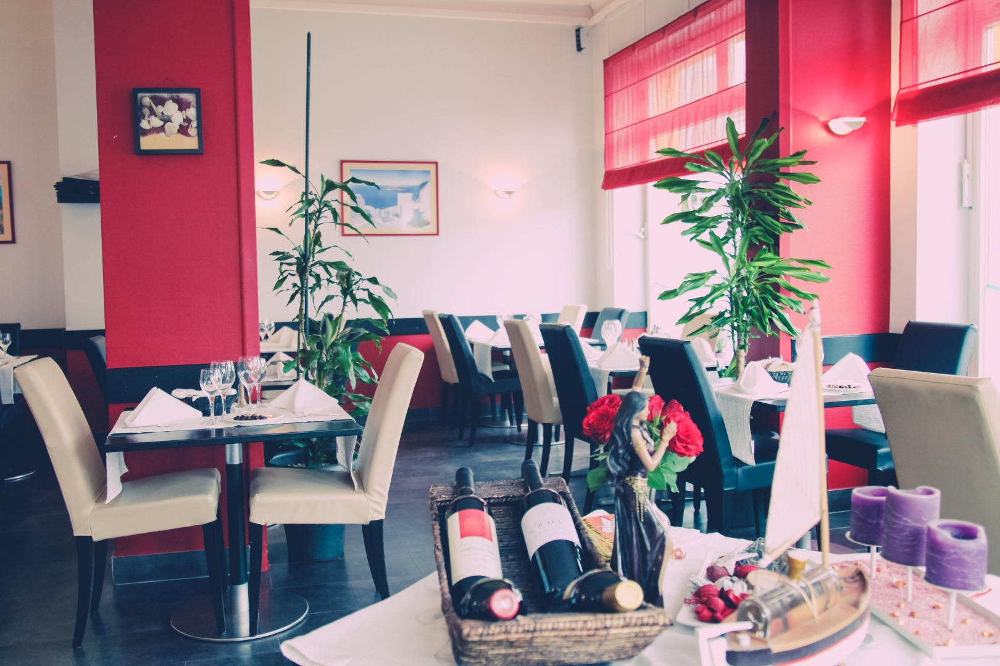

La Maison
Une cuisine portugaise authentique.
Atlantico apporte les saveurs authentiques de la côte atlantique portugaise au cœur du Luxembourg. Fondé par Nuno, originaire de Cascais, le restaurant est construit autour des trésors de la mer — gambas géantes grillées, scampis flambés, bacalhau préparé à la manière traditionnelle ou à la Brás, et la célèbre grillade mixte associant homard, lotte, scampis, calmars et saumon. Les amateurs de viande ne sont pas en reste : une brochette géante de faux-filet et chorizo ainsi qu'une picanha à l'Argentine viennent compléter la carte.
Grillade mixte de fruits de mer
Homard, lotte, scampis, calmars et saumon — la pièce maîtresse de la maison.
Terrasse & cadre accueillant
40 couverts, une terrasse et un parking privé — pour un déjeuner d'affaires ou un dîner en famille.
Vins portugais sélectionnés
Une sélection de vins portugais soigneusement choisie pour accompagner chaque plat.